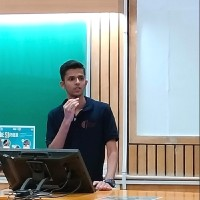

We came up with the idea of this group since we had to face a lot of problems and
difficulties during our first experience with the stock market and trading strategies,
we used to search all over the internet just to gather even a small piece of information,
There was no authentic sharing and learning platform for this purpose of our campus hence we decided to create one.!
We also have certain things planned across the timeline such as Daily current affairs about the market,
monthly company analysis, study materials, articles about market changes, risk management strategies,
algorithmic strategies, career opportunities in the stock market etc.
Shravan Somani (Vice President)
Shravan Somani, based in Secunderabad, IN, is currently a Vice President at Traders@BPHC.
Shravan Somani brings experience from previous roles at Traders@BPHC,
TLE Eliminators and Department of Sponsorship and Marketing, BITS Pilani - Hyderabad Campus.
Shravan Somani holds a Bachelor of Engineering -
BE in Electronics @ Birla Institute of Technology and Science, Pilani - Hyderabad Campus.
Siddharth Sangai (Secretary)
Siddharth Sangai, based in India, is currently a Teaching Assistant at Birla Institute of Technology and Science, Pilani.
Siddharth Sangai brings experience from previous roles at Traders@BPHC and StackWalls.
Siddharth Sangai holds a Bachelor of Engineering -
BE in Electronics and Communication Engineering @ Birla Institute of Technology and Science, Pilani.
Jaikrish Yuvaraja (Core Member)
Jaikrish Yuvaraja, based in Hyderabad, IN, is currently a Core Member at Traders@BPHC.
Jaikrish Yuvaraja holds a 2022 - 2026 Bachelor of Technology - BTech in Electrical and Electronics Engineering
@ BITS Pilani, Hyderabad Campus.

Sameehan Saolapurkar (Trader)
Sameehan Saolapurkar, based in Hyderabad, IN, is currently a Trader at Traders@BPHC.
Sameehan Saolapurkar brings experience from previous roles at Jio Platforms Limited (JPL) and BITS Hyderabad Consulting Group.
Sameehan Saolapurkar holds a 2022 - 2026 Bachelor of Engineering -
BE in Computer Science @ BITS Pilani, Hyderabad Campus.
